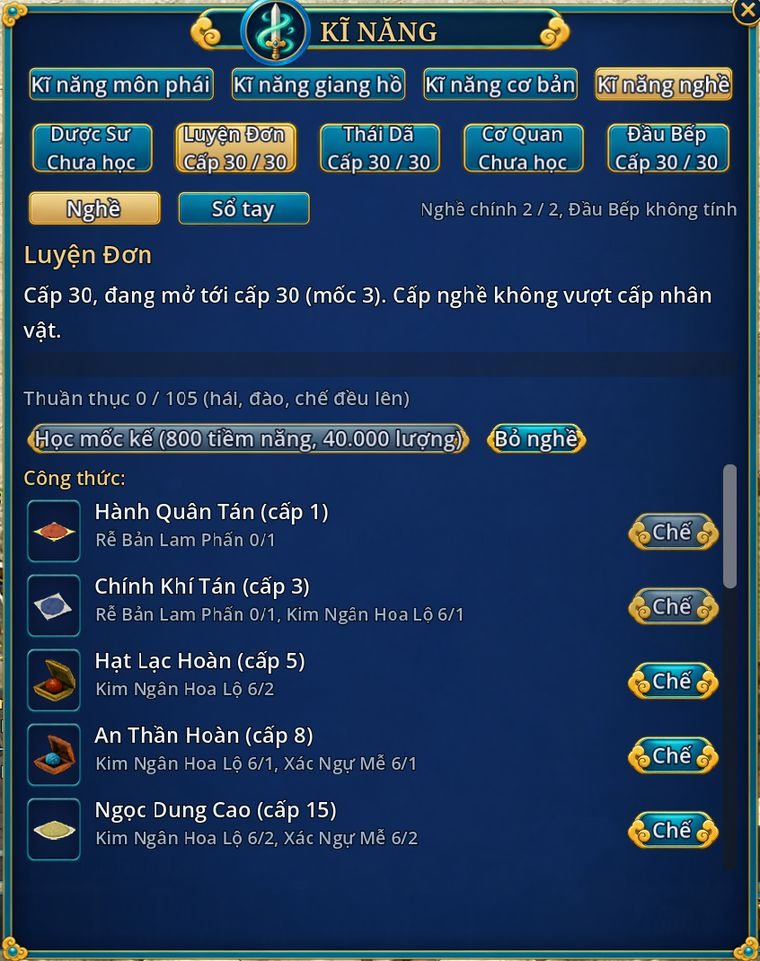

Học nghề
- Bản 5.0
- Alt+N hoặc Alt+R, tab Kĩ năng nghề
- 2 nghề chính, Đầu Bếp không tính

| Nghề | Làm gì |
|---|---|
| Dược Sư | Hái thảo dược, chế thành phấn cho Luyện Đơn |
| Luyện Đơn | Chế thuốc hồi máu, giải độc, tăng kháng |
| Thái Dã | Đào khoáng, luyện thành thỏi |
| Cơ Quan | Chế cấu kiện, chìa khoá Bảo Rương, túi hành trang, tạc đạn |
| Đầu Bếp | Nấu món hồi dần và món tăng chỉ số 30 phút |
- Mỗi nhân vật học tối đa 2 nghề chính, Đầu Bếp ai cũng học thêm được. Hai cặp hợp nhau: Dược Sư + Luyện Đơn, Thái Dã + Cơ Quan.
- Học ở Chu Quốc: Dược Sư Chu Quốc, Luyện Đơn Sư Chu Quốc, Công Tượng Mỏ Chu Quốc (Thái Dã), Cơ Quan Sư Chu Quốc (Tề Quốc cũng có), Đầu Bếp Chu Quốc. Chọn "Học nghề ..." để mở bảng nghề, "Mua công thức, nguyên liệu" để mở tiệm.
- Làm là lên: mỗi lần hái, đào, chế đều cộng thuần thục, đủ thì lên cấp. Việc sát cấp nghề của bạn cộng nhiều hơn việc quá dễ.
- Cấp nghề không vượt cấp nhân vật, tối đa 150. Mỗi 10 cấp học một mốc ở Công Tượng: mốc thứ n tốn 200 × n tiềm năng và 10.000 × n lượng (lên cấp 50 tốn tổng 3.000 tiềm năng, 150.000 lượng).
- Không tốn thể lực, không giới hạn mỗi ngày. Hái, đào 3 giây; chế 2 giây; một lệnh chế tối đa 100 lần.
- Công thức đầu tiên của mỗi nghề biết sẵn. Công thức khác mua ở Công Tượng (1.000 × cấp yêu cầu, ít nhất 2.000 lượng) hoặc rơi từ Bảo Rương.
Trong bang, kĩ năng Ưu Đãi Nghề giảm giá học mốc và tăng tỉ lệ chế thành công.